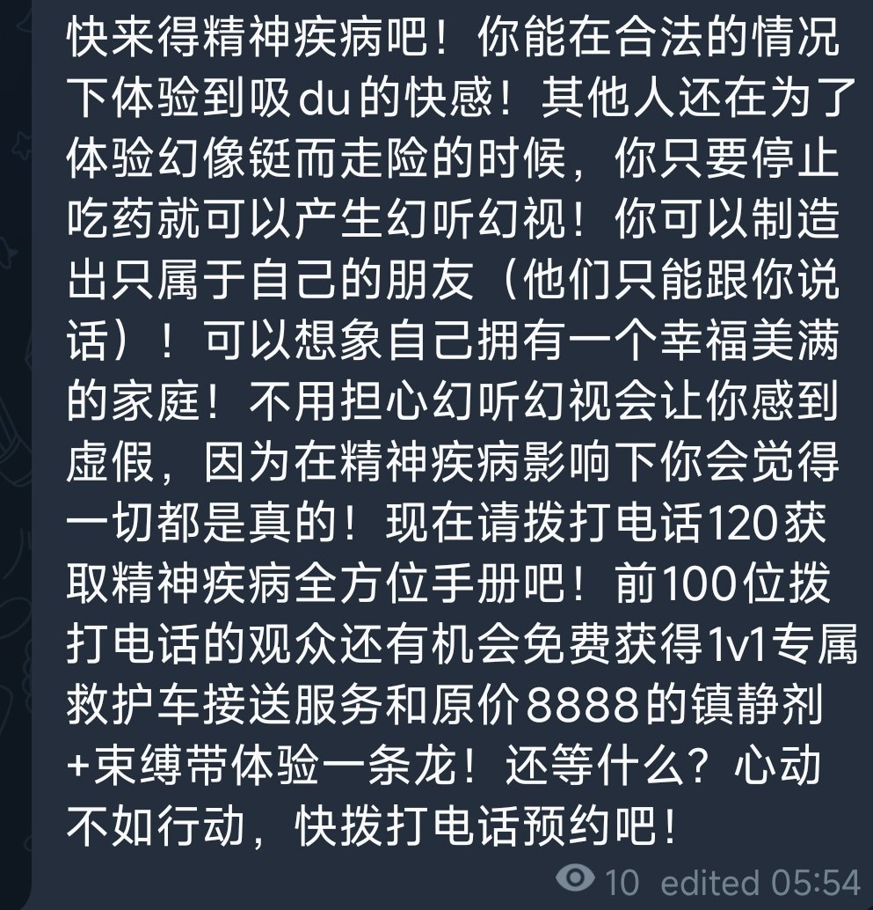

绝望_6De点
@6De_dian
@GrievousPotato1 大概是12月吗…？
：当人还是太残酷了。
如果说变成动物的话，那简直是一种宠幸吧
鲸鱼还能一鲸落万物生呢。
人死了就是臭。连不死都臭。人肉真是臭的没边了，血也是臭的要死
他妈尤其是那个脂肪金黄黄的想着就感觉臭。碰到热水还会变熟。黄色都变白色的那种
睡觉可真幸福。
我可是现在就会惨死的哦？

⛄ALLice🌈赛博幽灵
@GrievousPotato1
来看我去年某次发病时的胡言乱语 https://t.co/QbzhESEoa2